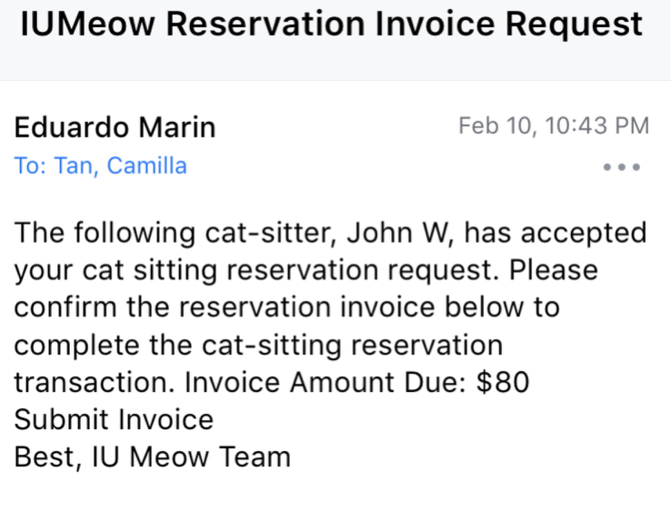

Overview
User: Indiana residents / Hoosiers
Location | Time: Bloomington, IN | Spring 2019
Language/Library: HTML, CSS, BootStrap, PHP, SQL
Tools: PostgreSQL database
This is a 3-person team project during the class Information Architecture for the Web at IU. IUMeow is a website to provide cat owners who seek exclusive cat sitting services. To understand why we are interested in this project, please read our full business idea report here: Full Report  .
.
Goal for the project
- A complete login system to allow users signup, login and change passwords
- Able to add data into databse and pull data from database by users' inputs.
- Availability serach system, e.g 'search available sitters between April 1 - 2 locate in Indianapolis.
- Make reservation by automatically sending emails to users and lead to payment.
Process
What was my role in the Team?
Our team cannot make it without each other. Even though we used a template, I changed a lot of components to fit our needs, and create our own subspages, and to make the front end collaborate with back end. I'm in charge of all the front end design. I also contributed to problem-solving in back-end, such as password reset, and pulling users' data and profile image from database to show in the homepage, as well as making every page visually appealing. Since this is a business idea, I even added cat food ads in there!
Adding featuress
Firstly, we built the sign up form, including users' inputs requirement
Next users/sitters can log in and setup their profile. Features: Character count, upload profile photo.
After reservation, sitters can see reservations from owners and choose to confirm or decline.
If the request is approved, user will receive a confirmation email.

Outcome (click to see the video)
What is the biggest challenge during this project?
For a business website, the most crutial part is to figure out how to design the workflow, to reflect why is this going to work, and how can we make it easier or simplize the steps for user to make a reservation and feel safe and confortable to make a resservation with another stranger. We took a lot of time discusing the strategy as well as eliminating the works and concerns users might have, to maximize business revenue.